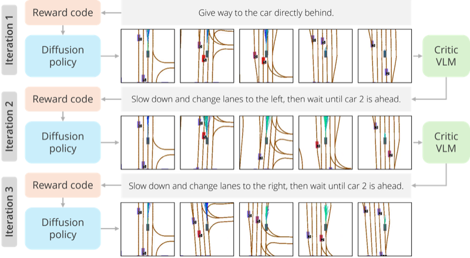
Brian Yang
Applied Scientist·Wayve Labs
I am an Applied Scientist at Wayve Labs on the Language and Reasoning team. Previously, I completed my PhD in Robotics at Carnegie Mellon University, advised by Katerina Fragkiadaki and Jeff Schneider, and worked at Meta AI. Before that I did my undergrad at UC Berkeley, where I was fortunate to work with Dinesh Jayaraman, Roberto Calandra, Sergey Levine, and Kris Pister.
My research is about the data bottleneck in robot learning: the rare and safety-critical behaviors that are scarce in real-world logs. During my PhD I worked on this for autonomous driving, using language to specify the behavior we want and generative models to synthesize it, and treating the two as a single data engine for training driving policies. Earlier, during my undergrad, I worked on a variety of real-world robot learning problems ranging from low-cost manipulation to microrobot locomotion.
Publications
11 papers · 1 thesis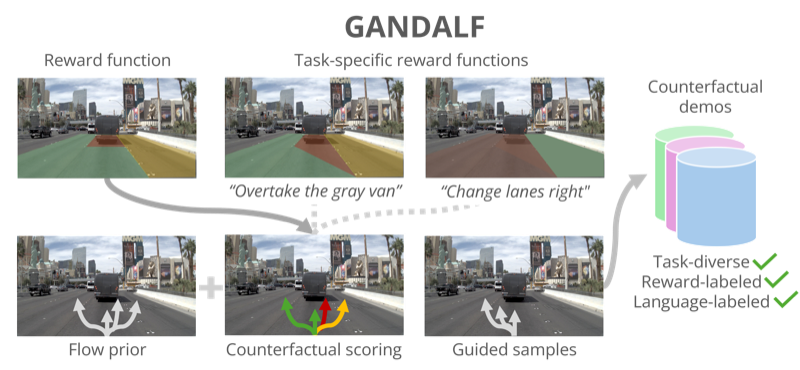
GANDALF: Grounding Autonomous Driving Agents via Language Feedback
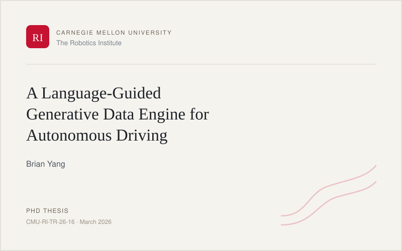
A Language-Guided Generative Data Engine for Autonomous Driving
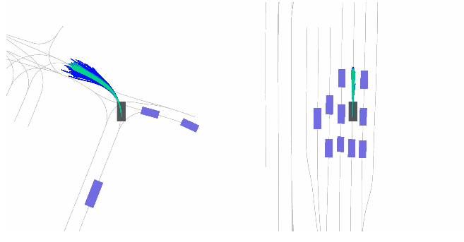
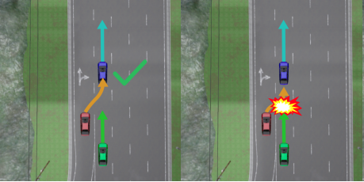
Learning Driving Policies with Offline Counterfactual Reactive Simulation
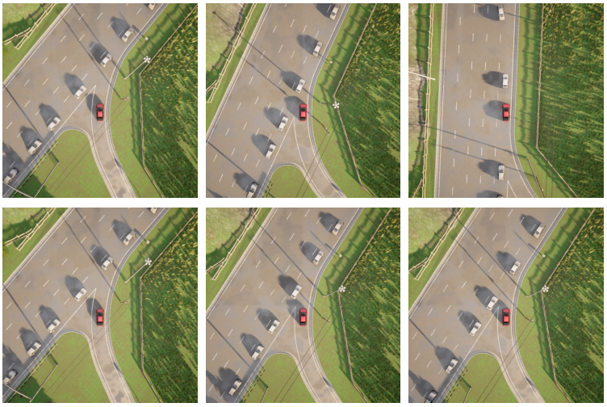
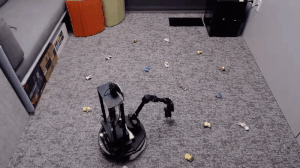
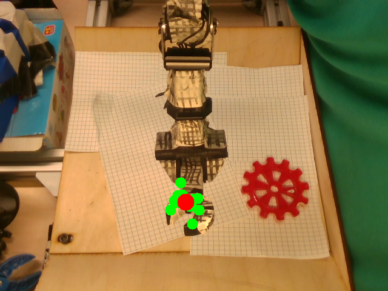
MAVRIC: Morphology-Agnostic Visual Robotic Control
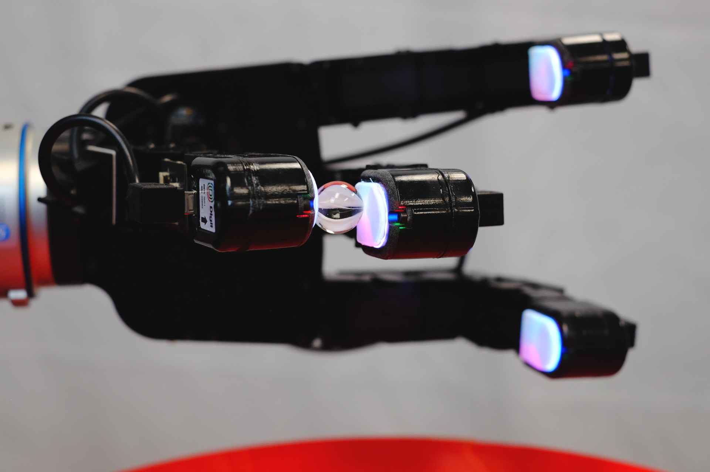
DIGIT: A Novel Design for a Low-Cost Compact High-Resolution Tactile Sensor with Application to In-Hand Manipulation
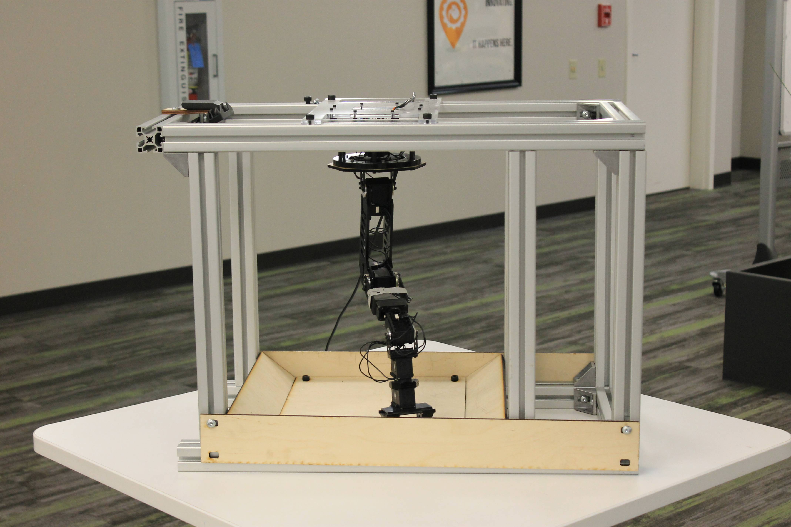
REPLAB: A Reproducible Low-Cost Arm Benchmark Platform for Robotic Learning
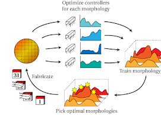
Data-efficient Learning of Morphology and Controller for a Microrobot
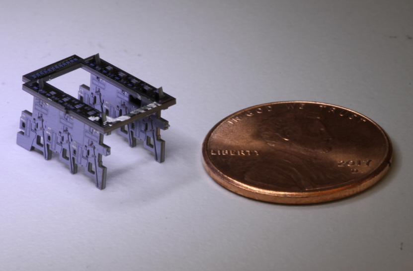